16 End-to-end encryption
Announcements
- Please pick up your card
- Homework 6 is due today at 8pm, with a grace period until tomorrow at 10pm (NIST beacon)
- Homework 7 will be released today and due Wed 11/11
- Lab 10 on this week’s reading (Signal’s double ratchet algorithm)
Learning outcomes
By the end of today’s lecture, you will learn:
- The double ratchet protocol used in the Signal and WhatsApp end-to-end encrypted messaging apps
- How deniability, forward secrecy, and backward secrecy provide partial security even if a phone is temporarily compromised by Mallory
Review from last lecture
Encryption is one of the main tools that we use to protect data confidentiality. The goal of Unit 3 of this course is to study encryption and its role in:
- Protecting data at rest on your laptop or phone (Lecture 15)
- Protecting data in transit over the Internet or messaging app (today + Monday)
Whenever encryption is used in practice, remember to think about:
- Where are the keys? (Who has them, and in what circumstances?)
- What if something goes wrong? (For instance, a device temporarily becomes under Mallory’s control)
Two techniques used in data-at-rest encryption:
- Derive symmetric keys (from a password) rather than storing them on the device
- Use key wrapping to encrypt one key under another
Encryption on the Internet is often performed in one of two ways.
| Client-server encryption | End-to-end encryption |
|---|---|
| Alice encrypts her message with the tech company’s key (and hence, they can read it). Separately, the tech company encrypts a message to Bob. | Alice encrypts her message directly to Bob. While the message passes through the server, the tech company cannot read it. |
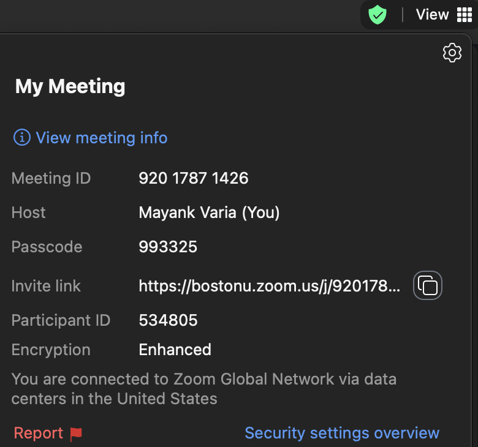 |
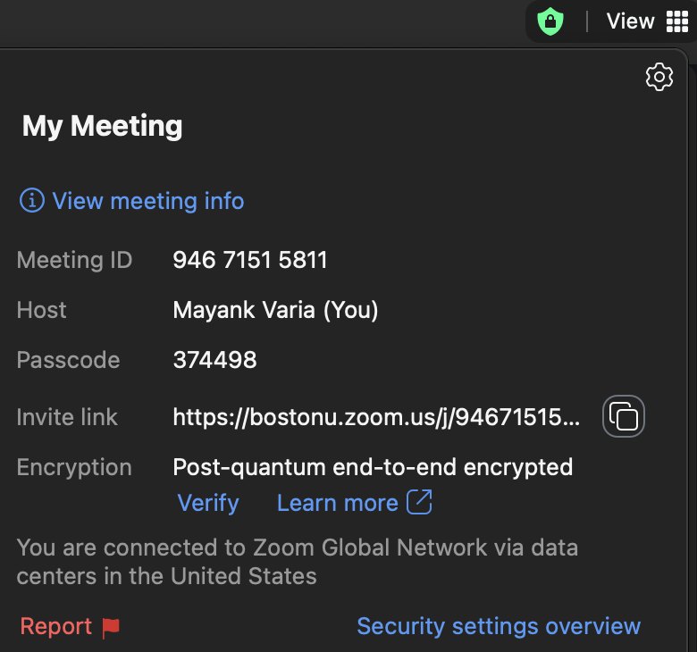 |
16.1 Signal overview
Today, we will study the Signal protocol for end-to-end encrypted messaging. This protocol is used in:
- Signal’s own app
- WhatsApp and Facebook Messenger, both owned by Meta
- Google Messages (for text messages between Android devices)
Text messages sent between Apple devices using iMessage, and RCS text messages between Android and Apple phones, are also end-to-end encrypted but do not use the Signal protocol specifically.
| Alice | Mallory | Bob | ||
|---|---|---|---|---|
| \(\longrightarrow\) | \(\longrightarrow\) |
The scenario for today is that Alice wants to have a text message conversation with her friend Bob. Here are her objectives:
- Protect messages in transit over the network, to ensure message confidentiality and sender authenticity
- Authenticated encryption will do this, if Alice and Bob have a shared symmetric key \(k\)
- Protect messages even if one of their phones is temporarily compromised
- This is new to us! We will study deniability and forward/backward secrecy today
- Ensure that the text conversation can be asynchronous, meaning that each party go offline and then later come back online and immediately receive messages
Here are some non-goals in Signal:
- Hiding metadata (e.g., Alice and Bob’s identities, the fact that they are talking to each other, message size)
- Censorship resistance (if you want that, combine today’s lecture with Unit 2)
In summary: the goal of Signal is to act like an ephemeral in-person conversation. Two people talk to each other, and the transcript of the conversation need not live forever.
16.2 Cryptographic deniability
Let’s begin by discussing the notion of deniability in crypto. It is perhaps easiest to start with its opposite: what does non-deniable crypto look like?
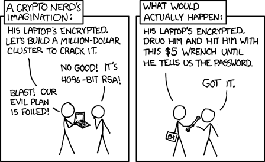
Deniable crypto has two seemingly-contradictory requirements:
- Today, Alice can send a message to Bob, with confidentiality and integrity
- Tomorrow, if Mallory coerces Alice to reveal the message, then Alice can pretend she said something else
It is not actually our goal to incentivize Alice to lie. Instead, we want to disincentivize Mallory from coercing anyone in the first place, by making it useless to do so.
Interactive question. Which method(s) for data integrity cannot be deniable?
- Digital signatures
- Message authentication codes
- Both
Answer. Digital signatures are inherently non-deniable since the whole world can tell that Alice is the creator of a message.
- That can be a good thing in some applications like Bitcoin where everyone needs to identify who created a transaction
- But here it is a bad thing because we do not want a permanent record of what Alice said to Bob
Let’s compare MACs and digital signatures, in the scenario that Alice sends a message \(m\) to Bob.
| Property | MAC | Sign |
|---|---|---|
| Message authenticity: Bob can detect if \(m\) has been tampered in transit | ✓ | ✓ |
| Sender authenticity: Bob knows Alice sent \(m\) | ✓ | ✓ |
| Receiver authenticity: Bob knows that \(m\) is intended for him | ✓ | ✗ |
| Partial deniability: Alice can deny to Mallory that she created \(m\) | ✓ | ✗ |
Deniability, in pictures
Deniable crypto allows Alice and Bob to pretend they said something else.
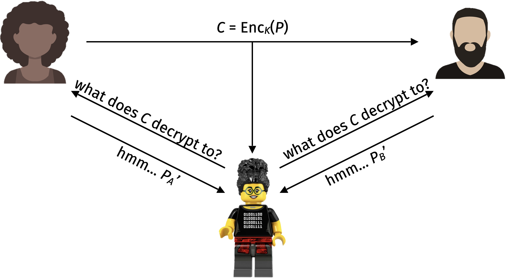
Remember that deniability only protects the cryptographic keys. If the messages themselves are still stored on Alice or Bob’s phone at the time of compromise, Mallory can read them. In other words: this approach works well together with disappearing messages.
A one-time pad (with any MAC) provides perfect message deniability. Alice and Bob can separately deny the contents of the message. Mallory cannot distinguish between the truth, Alice’s lie, and Bob’s lie.
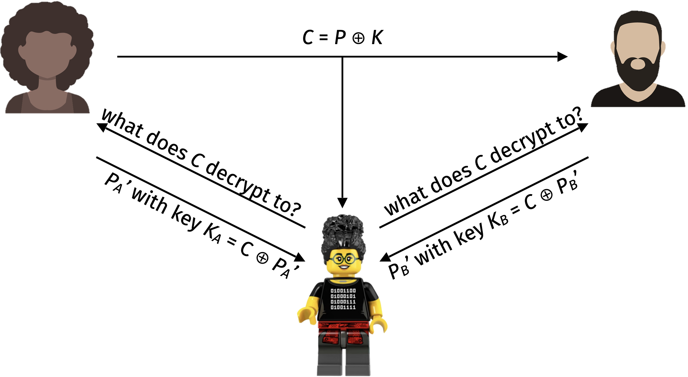
Bad news: it can be proved that perfect message deniability requires long keys: \(|k| \geq |p|\).
Every authenticated encryption scheme provides partial sender deniability. If Mallory does not observe the ciphertext in transit over the Internet, then there is nothing Bob can do later to prove mathematically to Mallory that Alice is the sender.
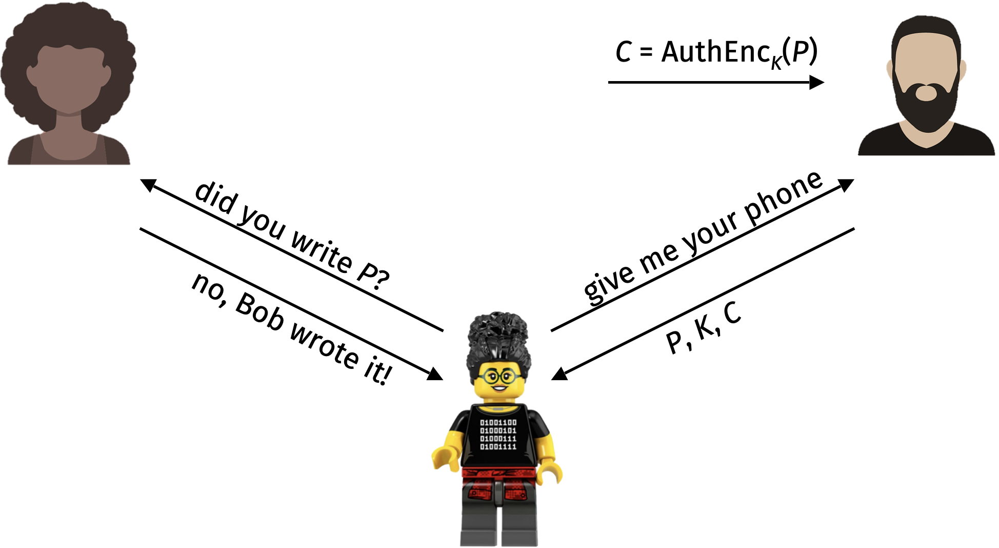
For this reason, the Signal message protocol uses authenticated encryption to protect each message. It never uses digital signatures.
16.3 Forward and backward secrecy
Next, let’s see why Signal does not use public key encryption either.
I said in a previous lecture that:
Public key encryption is risky: losing control of the secret key for an encryption scheme has immediate, irrecoverable consequences
Why is that?
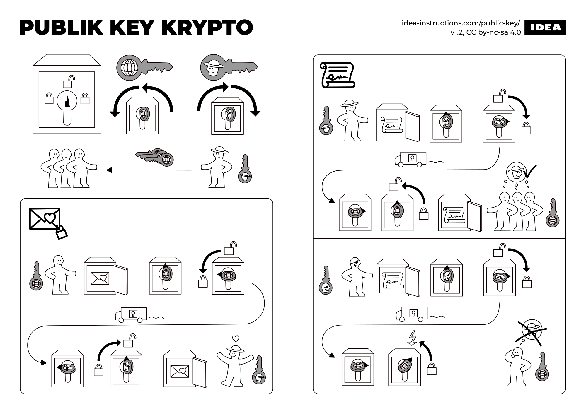
Suppose that Alice sends a message to Bob. What happens if Mallory learns either of their secret keys?
With a digital signature scheme, Mallory can forge messages as Alice in the future. In response, Alice can revoke its key – that is, tell everyone not to trust it anymore.
With a public key encryption scheme, Mallory can read messages sent to Bob in the past. There is no way to recover from this data breach.
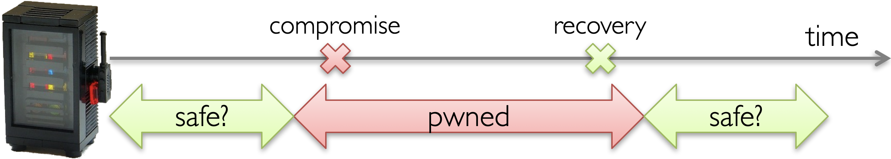
Formally, we say that a cryptosystem satisfies:
- Forward secrecy, also known as pre-compromise secrecy, if the messages sent today are safe even if one’s device is compromised at a later time
- Backward secrecy, also known as post-recovery secrecy, if the messages sent today are safe even if one’s device was compromised at a prior time
To achieve this goal: Signal only uses symmetric AuthEnc with short-term keys. In fact, each key will only be used to encrypt one message, and then it is discarded!
Remember our mantra from before: derive keys rather than generating them! Since Signal is designed to be asynchronous, we consider two types of key derivation (or ratcheting).
- Symmetric ratcheting occurs when only Alice (or only Bob) are sending messages
- Public ratcheting occurs when we alternate the direction of who is sending/receiving messages
Symmetric ratchet
Question: Suppose that Alice and Bob already have a shared symmetric key \(k_1\) for authenticated encryption. How can they update to a new key \(k_2\):
- without communicating,
- such that if Mallory learns \(k_2\) then she still cannot learn \(k_1\)?
Here is an idea: once we have a single shared key \(k\), expand it using a chain of hash functions (or more precisely, a key derivation function \(H\) like HMAC).
\[ \begin{align*} k_2 &= H(k_1) \\ k_3 &= H(k_2) = H(H(k_1)) \\ k_4 &= H(k_3) = H(H(H(k_1))) \\ &\;\vdots \end{align*} \]
Here is Alice and Bob’s plan:
- Alice sends message \(i\) with key \(k_i\)
- Then Alice ratchets to key \(k_{i+1}\) and deletes \(k_i\)
- After Bob receives and decrypts the message, he also ratchets to the next key \(k_{i+1}\) and deletes \(k_i\)
- This ratcheting procedure is non-interactive: Alice and Bob can perform it independently on their own phones and reach the same result
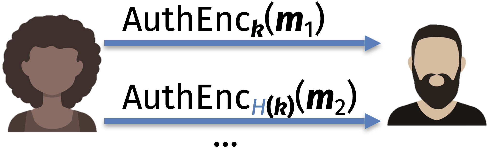
Interactive question. Which security requirement(s) does symmetric ratcheting achieve?
- Forward (pre-compromise) secrecy
- Backward (post-recovery) secrecy
- Both
- Neither
Public ratchet
Backward secrecy requires interaction. So, we will add it on top of Diffie-Hellman key exchange.
- We already know it takes 2 communications to establish a shared secret
- It turns out that 1 communication suffices to update it!
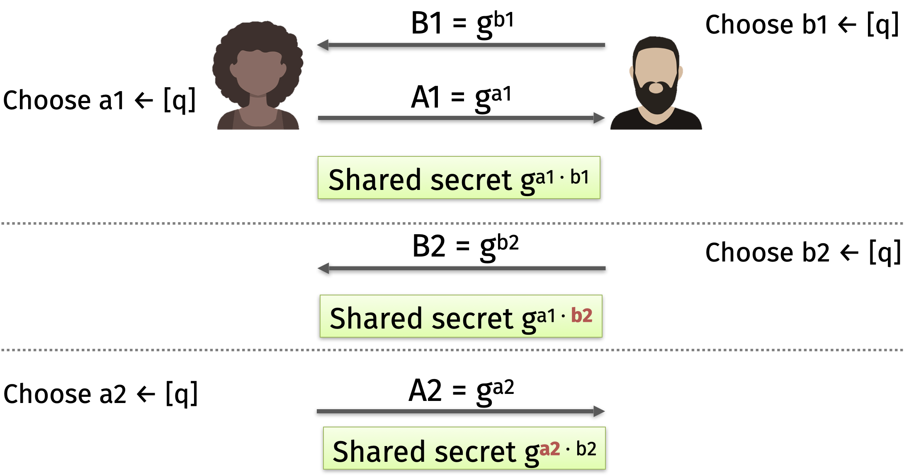
Suppose that Alice and Bob alternate sending messages: Alice sends one message \(m_1\), then Bob sends one message \(m_2\), and so on. Then they can communicate as follows.
- They use Diffie-Hellman key exchange to produce the first shared secret \(k_1 = g^{a_1 b_1}\)
- Alice uses \(k_1\) to encrypt the first message \(m_1\)
- Bob chooses \(b_2\) and derives a new key \(k_2 = g^{a_1 b_2}\), and sends to Alice \(g^{b_2}\) along with
AuthEnc\({}_{k_2}(m_2)\) - Alice chooses \(a_2\) and derives a new key \(k_3 = g^{a_2 b_2}\), and sends to Bob \(g^{a_2}\) along with
AuthEnc\({}_{k_3}(m_3)\)
This procedure has backward, or post-recovery, secrecy because Alice and Bob use a random number generator to select each \(a_i\) or \(b_i\) secret exponents. So even if Mallory compromised a phone yesterday, she could not have stolen today’s secret exponents because they did not exist yet.
16.4 Double ratchet
In reality, Alice and Bob will not to interleave their messages perfectly. So the real Signal protocol for end-to-end encrypted messaging uses both the symmetric and public ratchets. Here is how it works:
- Alice and Bob maintain two sets of keys: one for Alice-to-Bob messages, and another for Bob-to-Alice messages
- When a message is sent or received, a symmetric ratchet step is applied to the sending or receiving chain to derive a new message key
- When alternating the direction of communication, a public ratchet step updates the chain keys that are used in the symmetric ratchet
Simplified version of Signal, in pictures
- Symmetric ratchet
- Each message key is used once, then deleted
- Provides forward secrecy
- Add chain keys
- “Message keys aren’t used to derive other keys… useful for handling lost/out-of-order messages”
- Public ratchet
- Provides backward secrecy as well
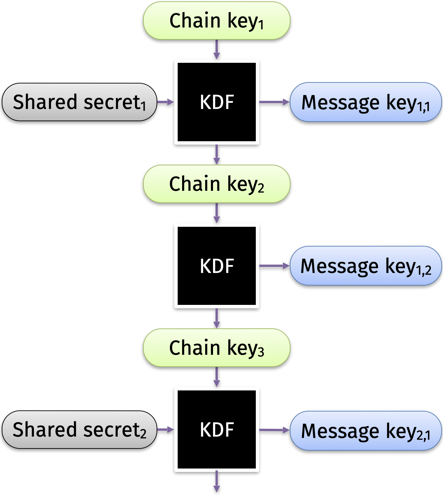
Public ratchet seeds the symmetric ratchets
Signal uses a KDF for both ratchets. The public ratchet produces the “shared secret” that is used to start the symmetric ratchet.
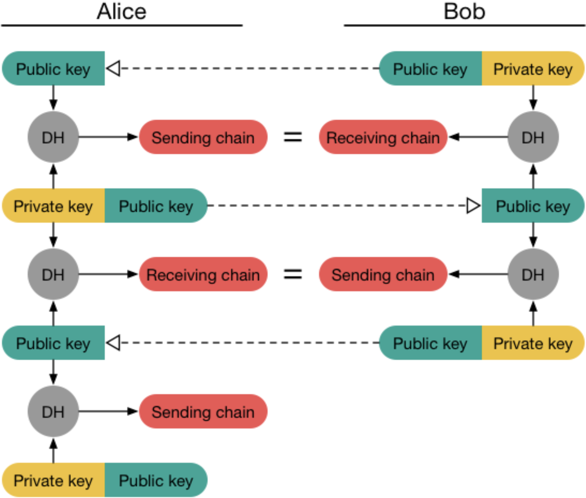
The root chain
Signal actually has a third chain called the root chain. It sits in between the public and symmetric ratchets, and it provides improved backward (post-recovery) secrecy. The Signal documentation provides more details.
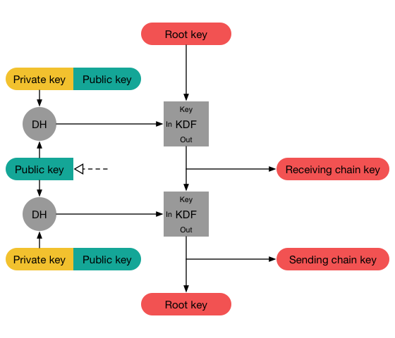
16.5 Putting it all together
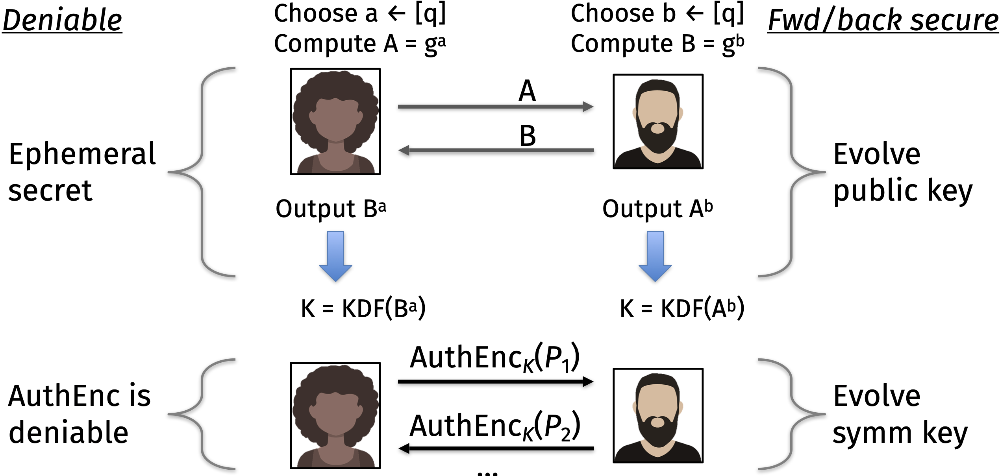
Let’s recap why the Signal protocol provides strong security.
Forward secrecy is achieved using the symmetric ratchet
“The parties derive new keys for every Double Ratchet message so that earlier keys cannot be calculated from later ones.”
Backward secrecy is achieved using the public ratchet
“The parties also send Diffie-Hellman public values attached to their messages. The results of Diffie-Hellman calculations are mixed into the derived keys so that later keys cannot be calculated from earlier ones.”
Deniability is achieved by only using authenticated encryption with ephemeral (one-time use) keys
Start of a conversation
One final thought: if you don’t have any long-term state, then who are you?
- How would Alice know that she has established deniable encryption with Bob… and not directly with Mallory?
- Resolution: the Signal protocol uses a long-term key, but only once in the very first Diffie-Hellman key exchange (also, Signal/Meta maintain a PKI)
- Also, Bob pre-computes his first \(g^{b1}\) on an untrusted always-online server, so that anyone can pick it up and start a conversation with Bob even if he is offline
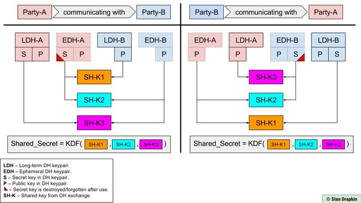
Some links with more information on end-to-end encrypted messaging apps:
Next time, we will discuss encryption in transit in a different setting: how your browser communicates with websites on the Internet.